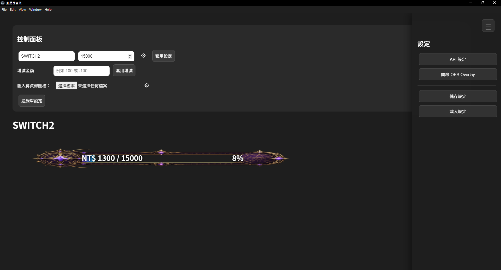
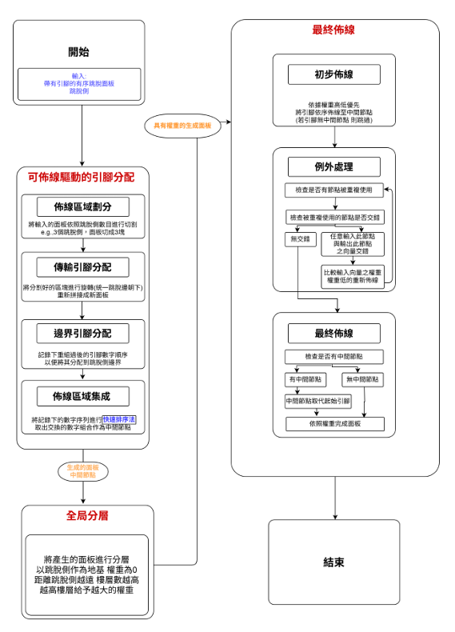

I hold a Master's degree in Computer Science and Information Engineering from National Yunlin University of Science and Technology, and a Bachelor's degree in Applied Mathematics from National Chiayi University.
My background combines algorithm design, optimization research, routing problems, desktop application development, and API integration.
I independently developed an Electron-based donation overlay platform integrating YouTube, Twitch, ECPay, and OBS Browser Source technologies.
My research interests include Ordered Escape Routing, VLSI design automation, optimization algorithms, and software engineering.
Built an Electron desktop application for live-stream donation tracking and overlay customization.
Integrated YouTube, Twitch, and ECPay services into a unified donation synchronization workflow.
Conducted master's thesis research on Ordered Escape Routing and hierarchical routing algorithms.

Electron-based donation overlay tool for streamers. Supports YouTube, Twitch, ECPay, OBS Browser Source, and real-time overlay updates.

Master's thesis focused on Ordered Escape Routing, Quick Sort based optimization, and hierarchical routing completion.
National Yunlin University of Science and Technology
M.S. in Computer Science and Information Engineering
National Chiayi University
B.S. in Applied Mathematics
GitHub: github.com/Alan-Xu-1
Email: shu.alan12@gmail.com